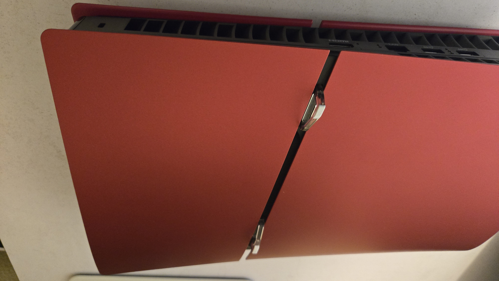

If you have a disc drive, remove the game disc. Fully power off the PlayStation, and unplug it. Move the console to a flat table and flip it so that the stands are facing up, also the side that doesn't have the PlayStation logo in the corner.


- Step One: Remove the smaller, cover that is towards the top of the console by prying up the front.
- Step Three: Inside the slot there is a smaller screw and spacer that should be removed and set aside.
- Step Two: Remove the SSD slot cover. It should be silver and stand out from the rest of the console. Find the screw at the top, then remove it and the cover.
- Step Four: Install the SSD card. Look for a small diagram of how the SSD should be lined up.
- Step Six: Put the expansion cover back and replace the screw.
- Step Five: Place the spacer under the end of the SSD and use the smaller screw to secure the expansion card in its spot.
- Step Seven: Replace the cover. Allign the hooks, and push down on the cover.
- Step Eight: Plug the console back in and turn it on. Go to settings and scroll down to storage. Select it and there should be a option called M.2 SSD Storage.